Pactum De Singularis Caelum
Covenant of One Heaven
 Principles
Principles
Article 14 - Life
By virtue of reason and common sense, it is a founding principle of this Covenant that everything in the universe is made from the same fundamental building blocks, that everything is living to some degree.
Therefore, the word life is used to define a higher degree of specialization and co-dependence between matter smaller than a planet.
By this Covenant, Hydro-Carbon life is defined as the sixth level of standard elements in the Universe, defined by complex molecules usually found within the atmospheres of moons and planets.
The distinction of Hydro-Carbon life is the use of hydro-carbon-based elements forming close bonds in order to form more complex arrangements.
Hydro -Carbon life can itself then be defined by six levels, the simplest being polymers - complex molecules and the most sophisticated being self-aware life.
Standard model of hydrocarbon life (Level 6 of element model)
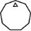 |
Level 1 | Polymers | Molecules |
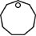 |
Level 2 | Mono-cellular | Protein-chains |
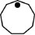 |
Level 3 | Simple species (a-sexual) | Mono-neural systems |
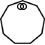 |
Level 4 | Simple species (sexual) | Dual-neural systems |
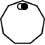 |
Level 5 | Complex species (sexual) | Triple-Neural systems |
|
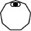 |
Level 6
|
Higher order life (self aware) | Triple-Neural systems |
By this Covenant, Non-Hydro-Carbon life is defined as the sixth level of standard elements in the Universe, defined by non-naturally occurring bonding of elements, usually as a result of an intelligent higher order life-force.
The distinction of Non-Hydro-Carbon life is the non use of naturally occurring hydro-carbon-based elements in preference for other close forming elements such as metals and silicates in order to intelligently form more complex arrangements.
Non-Hydro -Carbon life can itself then be defined by six levels, the simplest being components - complex molecules and the most sophisticated being self-aware life.
| Standard model of non-hydrocarbon life | ||||||||||||||||||||||||
|
The first level of Hydro-Carbon Life may itself be defined into sub-categories of simple naturally polymers and complex polymers.
By the rules of the Universe as defined in this Covenant, wherever the conditions exist for the formation of Hydro-Carbon Polymers, they will occur.
It is a principle understanding of this Covenant that the natural formation of Hydro-Carbon Polymers form in every single Star System to some degree at some time.
| Simple Polymers | |
|
Sugars |
|
Fats |
|
Amino Acids |
|
Nucleic Acids |
| Complex Polymers | |
|
Hormones |
|
Complex fats |
|
Vitamins |
|
Proteins |
The second level of Hydro-Carbon Life may itself be defined into sub-categories of simple and complex mono-cellular organisms.
By the rules of the Universe as defined in this Covenant, wherever the conditions exist for the formation of Hydro-Carbon Polymers, they will occur. Wherever Hydro-Carbon Polymers exist, simple mono-cellular life will also form naturally.
It is a principle understanding of this Covenant that the natural formation of Mono-Cellular Hydro-Carbon Life forms in every single Star System to some degree metal based planets or moons exist with surface temperatures higher than -100 degrees Celsius and lower than 200 degrees Celsius at some time.
| Primordial mono cellular creators | 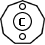 |
|
|
|
Primordial mono cellular destructive attractors |
|
|
|
|
|
| Advanced mono cellular creators (Protozoa- Sacodina, Ciliata) | 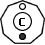 |
|
|
|
|
|
Advanced mono cellular destructive attractors (Protozoa- Mastigophora) |
|
|
|
The third level of Hydro-Carbon Life may itself be defined into sub-categories of simple multi-cellular organisms.
| Fungi | |
| 1- Fungi | (Animal/Plant) 2000 million |
| Algae | |
| 1- Algae | (Animal/Plant) 2000 million |
| Primal Eukaryotes | |
| 2-Jellies & Sponges | (Animal) 800 million |
| 3-Worms & Echioderms | (Animal) 600 million |
| Primal Prokaryotes | |
| 4-Ferns & Horsetails | (Plant) 450 million |
| 5-Psilophytes | (Plant) 400 million |
| 6- Moss | (Plant) 300 million |
The fourth level of Hydro-Carbon Life may itself be defined into sub-categories of simple sexual-multi cellular organisms.
| Hybrid Eukaryotes | |
| 1-Coral | (Animal/Plant) 550 million |
| Eukaryotes | |
| 2-Mollusks | (Animal) 500 Million |
| 3-Crustaceans | (Animal) 500 million |
| 4-Insects & pedes | (Animal) 400 million |
| Prokaryotes | |
| 5-Flowering trees | (Plant) 350 million |
| 6-Flowering Plants | (Plant) 400 million |
The fourth level of Hydro-Carbon Life may itself be defined into sub-categories of complex sexual-multi-cellular organisms.
I- Egg-laying
| Water-Based | Fish | 700m years ago | ||
| Land/Water Based | Amphibians | 400m | ||
| Reptiles | 250m | |||
| Land Based | Monotremes | 200m | ||
| Land /Air Based | Birds | 150m | ||
II- Pouched (marsupials)
| Land Based | Kangaroo, Wombats | 200m | |||||
III- Placentals (mammals)
| Water-Based | Dolphin | |||
| Sea-cows | ||||
| Whale | ||||
| Land/Water Based | Rodents | |||
| Seals | ||||
| Land Based | Rabbit/Hares | |||
| Even-toed hoofed | ||||
| Odd-toed hoofed | ||||
| Even-toed hoofed | ||||
| Anteaters,sloths | ||||
| Carnivores | ||||
| Pangolines | ||||
| Hyraxes | ||||
| Primates | 40m | |||
| Elephants | 60m | |||
| Land /Air Based | Colugos (flying lemurs) | |||
| Bats | 60m | |||
By this covenant, Higher Order Life is defined as those lifeforms that have the capacity to dream, to project their own reality onto the world and self reflect, to display emotions. Principally on Earth, this represents the placentals, the most advanced of all lifeforms (usually called mammals).
In regards self aware life, this principally means triple neural lifeforms on planet Earth- the vertebrates and principally the placentals (mammals). These lifeforms have the most advanced neural network systems. Therefore, we can reliably use the structure and complexity of brain systems to categorize self-aware life on planet Earth.
By this Covenant, Higher Order Life is further defined by six (6) categories:
| 6 Levels of Higher Order Biological Life | |||||||||||||||||||||
|
And in the revealing of this Covenant we see for the first time the revealing of the life journey for all souls and minds. The 12 levels of life journey.
| LEVEL | NAME | AGE RANGE | AGE LENGTH | |
| L0 | Our first form- the potential, the idea, the matter of existence. | Eternal | ||
| L1 | Foetal | 0- to birth | Mortal- (less than 1 yr) | |
| L2 | Infancy | birth to 4 | Mortal- (4 yrs) | |
| L3 | 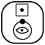 |
Childhood | 4 to 11 | Mortal- (7 yrs) |
| L4 | Adolescence | 11 to 19 | Mortal-(8 yrs) | |
| L5 | Youthhood | 19 to 33 | Mortal-(14 yrs) | |
| L6 | Adulthood | 33 to 50 | Mortal-(17 yrs) | |
| L7 | Seniorhood | 50 to 70 | Mortal-(20 yrs) | |
| L8 | Elderhood | 70 to death | Mortal-VARIABLE | |
| L9 | Death | The moment of dying and death | Mortal | |
| L10 | 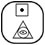 |
Transition | The moment of transition to angel, ghost | Immortal |
| L11 | 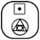 |
Angel | The stage of enlightenment as an angel | Immortal |
| L12 | Our final journey, our final death and ultimate birth. | Eternal | ||
It is an essential principle of this Covenant that all men, women and higher order lifeforms have a right to a quality and dignified life. This principle means more than a generalized statement of life regardless of what the quality or context.
Laws or belief systems that enforce life without any consideration of the quality of life are barbaric, cruel and against the very meaning of life they claim to cherish.
It is an essential principle of this Covenant that all men and women have the right to choose to die with dignity.
Human technology enables life to be sustained and perpetuated far beyond the scope of previous generations. With these gifts, many lives can be saved and repaired. Yet it is also true that life can be extended beyond a point whereby the quality of life is marginal.
A solitary bed in a hospital or elderly home should not become the standard path to which all our lives inevitably end. Instead, our society should strive to enable its citizens to die well just as they have lived well, in the comfort of home, in the presence of love, in a state of peace.
As a state must never arbitrate on the life and death of its citizens, it must rest on the choice of the individual to find a balance between life and science and the quality of personal life.
Belief systems or laws that make no consideration for the essential right of a man or woman to choose to die with dignity are barbaric, cruel and against the very meaning of life and the principles of this Covenant.
By this Covenant and the existence of One Heaven it is so that life continues beyond death. That we might be the designers and architects of this new world, that we may choose to help the Homo Sapien species as one.